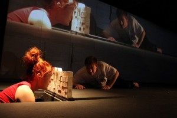
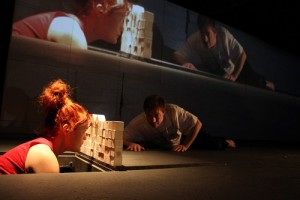
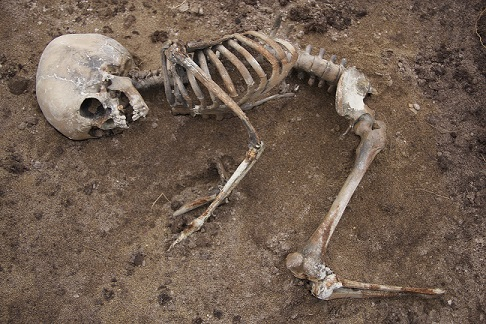

Personlig stemme m/Marius Kolbenstvedt - 3 dager, m/Fortellerfestivalen. FRIST 1/3
- Kategori:
- Kurs med åpning for andre
Kurs med åpning for andre
Åpent for profesjonelle skuespillere. En viss åpning for andre utøvende kunstnere med relevant erfaring. Andre kunstnere må sende CV. - Dato:
- 18.05.2016 til 21.05.2016
- Start kl :
- 10:00
- Slutt kl :
- 15:00
- Pris:
- 500,-
- Adresse:
- Norsk Skuespillersenter, Welhavens gate 1, Oslo
 


{kind=link}
Personlig (gjen-)fortelling
- Workshop med den meget spennende og utforskende scenekunstneren Marius Kolbenstvedt!
- Hvordan lete etter og stole på den kunstneriske kraften i vår personlige dagligtale og våre personlige fortellinger?
- Hvordan bruke de rike nyansene i vår personlige dagligdagse måte å snakke på, som en fornybar ressurs for troverdig kunstnerisk kommunikasjon?
- Behøver det være noen forskjell mellom måten vi spiller roller i dagliglivet og måten vi spiller roller i kunstneriske sammenhenger?
Workshopen resulterer i en visning under Fortellerfestivalen i perioden 20.-22. mai 2016. Fortelling vil være det bærende uttrykket.
Påmelding
Kurset er åpent for skuespillere og fortellere.
De 8 deltagerne blir plukket ut på bakgrunn av en innsendt kunstnerisk cv og en tekst om hvorfor du ønsker å delta (maks en halv side). Dette sender du til post@skuespillersenter.no
Søknadsfrist: 1.mars
Metode og innhold
{kind=link}
Workshopen undersøker muligheter for å utvide rommet for den personlige fortellingen. Hvordan? Ved å blande aktørenes personlige historier med gjenfortelling av utvalgte skjønn- eller faglitterære tekster knyttet til festivalens tema “Ren skit”.
- Vi vil undersøke individuelle forskjeller hos aktørene når de forteller selvopplevde historier og gjenforteller andre typer tekster, og arbeide med å overskride og utviske disse forskjellene.
- Kan usikkerhet rundt det selvopplevde i en fortelling gi åpnere tolkningsrom for tilhøreren?
- Vi vil også undersøke ulike nonverbale handlingers påvirkning på fortellingens valør.
Workshopen vil ta utgangspunkt i deltakernes personlige assosiasjoner til tematikken, og spontane responser på utvalgt tekstmateriale. Basert på materialet som oppstår, jobber gruppa videre med egne refleksjoner og deltagernes ulike performative egenskaper. Her skapes enten en montasje av enkelthistorier eller ett sammenhengende narrativ. Muntlig fortelling vil være det bærende uttrykket, men supplert eller kontrastert med nonverbale grep.
Mål
Kan en kort utviklings- og produksjonsprosess åpne andre skapende muligheter?
Kan de samlede personlige historiene i et kollektiv fungere som en scenisk evighetsmaskin?
Hvilke elementer utkrystalliserer seg som vesentlige for formidling?
Hvilke skapende muligheter kan knapphet på tid og produksjonsmidler gi?
Info til kursdeltakerne
Forbered en kort scenisk fortelling ut fra din personlige tolkning av ordparet “ren / skit” . På hjemmesidene til Fortellerfestivalen kan du lese nærmere om noen av perspektivene på tema: Fortellerfestivalen.no/?page_id=15917
- 18. og 19. mai er kurset på Norsk Skuespillersenter.
- 20. mai er kurset på HiOA.
- 21.mai er det prøver og arbeidsvisning på Sentralen, under Fortellerfestivalen.
Om kursholder
{kind=link}
Marius Kolbenstvedt er frilans skuespiller, dramatiker, musiker og regissør. Utdannet skuespiller ved Nordisk Teaterskole i Århus og UiO. Har jobbet med konstellasjoner som De Utvalgte, Fabula Rasa, Ossavy&Kolbenstvedt, Blendwerk, The Theatre of Corruption, TeaterTanken, Concerned Artists Norway, Pia Maria Roll og Hildebrand produksjoner.
Pris for NSF-medlemmer: 450,-
I samarbeid med
{kind=link}